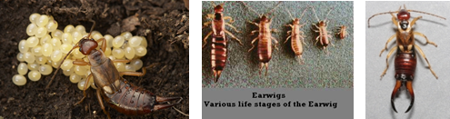

| Home |
| GROUNDNUT |
| 1. Aphids |
| 2. laef hopper |
| 3. thrips |
| 4. red hairy caterpiller |
| 5. leaf miner |
| 6. tobacco caterpiller |
| 7. gram pod borer |
| 8. pod borer (Ear Wig) |
| 9. pod bug |
| 10. Bud borer |
| 11. stem borer |
| 12. termites |
| 13. white grub |
| Questions |
| Download Notes |
PESTS OF GROUNDNUT :: Major Pests :: Pod Borer (Ear Wig)
8. Pod borer (Ear wig): Anisolabis stalli (Forficulidae: Dermaptera)
Damage symptoms: Young pods showing bore holes plugged with excreta, sand particles or discoloured pulp. Bored pods are devoid of kernels.
Bionomics: Adult is dark brown to black with forceps like caudal cerci and white leg joints. It lays eggs in clusters of 20-100 in soil and sometimes inside damaged pods and hatch in about a week. The five nymphal instars resemble the adults which can live as long as 250 days. Their unique forked abdominal tip can easily be recognized as letter ‘Y”.
 |
Management
- Apply malathion 5D or endosulfan 4D or carbaryl 10 D at 25 kg/ha prior to sowing in areas where the ear wig is endemic.